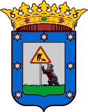
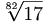
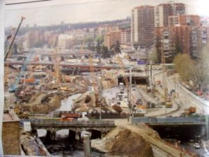

Madriz (ciudaz)
 De: La Frikipedia, la enciclopedia extremadamente seria.
De: La Frikipedia, la enciclopedia extremadamente seria.
«Madriz» redirige aquí. Para otras acepciones, véase Madriz (desambiguación).
| De la serie ciudades del mundo:
|
| Madriz
|

|

|
| (Bandera)
|
(Escudo de armas)
|
|
| Topónimo oficial
|
La Meseta
|
| País
|
Españo
|
| Código postal
|
11811
|
| Superficie
|
¡que va! llena de obras
|
| Altitud
|
0,1km
|
| Distancia
|
a 0km. de la puerta del Sol
|
| Fundación
|
Cuando acaben las obras en 9999
|
| Población
|
6 millones (5.999.999 de chinos y un español)
|
| Gentilicio
|
ma(n)driles
|
| Alcalde
|
Don Alberto Ruín Gallardón
|
| No hay joer!
|
- Nota: para darle más sabor madrileño al artículo, está medio escrito en castizo, una versión rara del español. ¡Avisao estás!
Madriz, también conocido como Mandril es un barrio de Logroño situado en la Provincia de Jerez Riojana y que queda más o menos en el centro del país, porque a un tío se le ocurrió hacer un triángulo en medio.
Entre sus muy variados paisajes encontrarás una ciudad llena de grúas que han ido ganando terreno a los árboles. Tié 4 equipos de fúrbo en primera división: el Real Mandril, el Patético de Mandril, el Raxo Vallecano y el Jeta F.C.

Madriz de noche es tan oscuro que ni se ve la luna
Madriz también es conocida como la ciudad de los Madrileños, una especie supuestamente oriunda pero, dado que casi todos son inmigrantes de otras provincias, se duda de su existencia.
También conocida como MCMM (Madriz Centro del Mundo Mundial), MadriD o MadriT, tié la característica de recibir todas las vías de comunicación hacia ella a modo de agujero negro. De hecho, un gran número de científicos la visitan asiduamente para contrastar sus teorías gravitacionales de "agujeros de gran masa".
Cualquier ciudadano de Expaña tié que pasar por dicho centro del mundo para dirigirse a la periferia según el RD 1234-22 impulsado por Jose María Ansar.
En cuanto a su vegetación autóctona, se cree haber visto ejemplares en un jardín botánico, pero nadie sabe dónde está. Entre sus otros muy variados paisajes se encuentran esa niebla que imita la de Londres, aquí hecha artificialmente con humo y demás aires tóxicos durante el verano y provocada por su desgraciado clima frío el resto del año.
Madriz es famosa también por ser la ciudad de las obras, no importa en que época del año vayas, nunca podrás pasear libremente por la ciudad y mucho menos en coche pues es bien sabido que Madriz aspira al récord del mundo en atascos (Tranquilos, ciudadanos: algún día se conseguirá)
Un aspecto también muy singular es la noche madrileña muy reclamada sobre todo por los jóvenes, que sabes a que hora sales pero no sabes a que hora vuelves y mucho menos sabes que fue de tu coche...
Para terminar decir a los pueblos y ciudades de alrededor que estén atentos, nunca se sabe cuándo Madriz pué atacar y engullirlos, es una masa que crece continuamente que pué atraparlos cuando menos te lo esperas.
Geografía
Madriz se compone de:
- Madriz centro: que abarca todos los lugares a los que se pué llegar en metro o andando en un cuarto de hora (aka 1 hora y media).
- Afueras: Todo lo que se encuentra a 200 kilometros a la redonda de Madriz centro, incluyendo Tarrasa, Gerona y Lerida.
Historia
Fundada en el  d.C. por Paquismo (Franco fue un gran amante de Madriz, desgraciadamente, no correspondido) se cambió el gentilicio para viejos chistes sobre madrileños dándoles el de Lepe, lo que no debe dar lugar a engaño, ya que al escuchar chistes de leperos se puede estar seguro de que se refieren realmente a madrileños.
Política de altura mandrileña
Uno de los pasatiempos preferidos de los mandriles políticos es tocar los cojones diciendo que gestionan cuestiones importantes para la vida de otros simios, primos lejanos de ellos, a 500 o 1000 y pico kilómentos de distancia. Suelen hacerlo con la ayuda de prismáticos, pinzas para barbacoa y la Guardia Civil, facilitan enormemente la vida de estos simios de otros lugares, sobre todo cuando discuten sobre cómo han de sentirse con esa situación de dependencia y cómo han de tomarse sus torpes pero bienintencionás decisiones. Las comunidades mencionás estan hasta los güebos de la situación, pero el masoquismo propio les lleva a disfrutar de dicha sensación. Además, piensan en lo que harían las pobres familias de los responsables políticos centralistas mandriles ante la pérdida de su empleo o cómo iban a aprovechar el tiempo trabajando en el campo de la burocracia, seguramente tendrían que emigrar a otras comunidades y empezar a trabajar, actividad para la que evidentemente no están preparados (es un secreto a voces que los madrizleños nunca han necesitado trabajar, ya que viven de los impuestos recaudados en el resto del país) Es conocido que los mandriles tienen un hueso en la espalda que les permite caminar erguidos con su traje regional, pero que les impide dar un palo al agua.
Otro de sus quehaceres suele ser advertir al territorio sobre el alto riesgo de terremotos, que podría llegar a resquebrajar la Península convirtiéndola en un archipiélago, lo cual supondría el agosto de los Ingenieros de Puentes y Caminos y la ruina definitiva para las canteras donde se fabrican las piedras, que se tiran los distintos tipos de monos araña: nacionalistas españoles, nacionalistas vascos, nacionalistas catalanes, secesionistas gallegos, andaluces aficionados a la petanca e independentistas suahilis. Por todo esto se recomienda no hablar mucho de temas espinosos ya que la placa tectónica que sostiene vibradores que han visto sus ventas despeñarse tan abajo que en el Infierno se lo están pasando bomba...
Normalmente en Cataluña Pais Vasco, Galicia, Andalucia y muchas otras comunidades, grupos de babuinos suelen agradecer esta agradable situación de tanto buen hacer, de una forma muy tradicional, preparan tartas con dulces frutas confitadas y tratan de hacerlas llegar a la cara de los amables mandriles políticos visitantes, si pué ser antes de que sus gorilas les disparen. El Amor pué palparse como sentimiento en esas situaciones e incluso usarse de ingrediente secreto para un bizcocho (relleno de ladrillos).
Organización politico-administrativa

Obras de Madriz, en Zaragoza
La ciudad está gobernada por ultraradicales religiosos seguidores de Gosser el Gosseriano, capaz de destruir el mundo con un muñequito de Marsmalows. Su máxima responsable, Esperanza Aguirre, es una acólita reconocida de Gosser, devoradora de Marsmalows y enemiga de todo lo que no sea seguir al gran Pepón.
La ciudad de Madriz, debido a sus 3.000.000 km2, se ha visto obligada a dividirse en 21 Distritos, también llamados países independientes, donde pués pasar de rodearte de pijos que sólo con mirarles te dan su Mercedes o ser tú quien se quede en gallumbos.
- 1. Centro: Barrio en el km0 de de Madriz en el que para andar 50m tiés la opción de estar haciendo zigzag durante media hora o bien coger una de las 400 lineas de Metro que pasan por la zona y llegar tras sólo 5 estaciones. Tiendas famosas en este distrito son los Corte Inglés, los FNAC, los McDonalds, los Sex shops y los chinos callejeros.
- 2. Arganzuela: Barrio tremendamente conocido por sus calles tan estrechas, complicadas y con tráfico que nos recuerda al más puro estilo M30. También es conocido por sus hundimientos en la zona de Legazpi a causa de las 3000 obras realizadas en la zona incluyendo la obra inexplicable en la plaza de Legazpi.Barrio donde ultimamente hay manifestaciones de rojos contra fachas.Este barrio ahora es conocido como el Califato independiente Al-Gan Zulá desde que fue independizada en 2015 por el líder político y mafioso local Andres Mohamed Ramos, que organizó la revuelta de Los borregos.
Este barrio es cuna de grandes artistas como LFAM Madrid,mas conocidos "Los Burlaos" con su legendario hit yo voy burlao.
- 3. Retiro: Zona pija que hace frontera con los "mejores" barrios de Madriz (Moratalaz y Vallecas) y que dispone de un amplio parque similar al Central Park de Nueva York (sólo desde el atardecer al amanecer).
- 4. Victoria Beckam, Supremas de Móstoles....) y también por la numerosa cantidad de Shih Tzus, tipo de perro con pelo en la cabeza y cuerpo desnudo.
- 5. Chamartin: Barrio peculiar en el que viven amontonás la clase baja, media y alta (en muchos casos una persona pué pertenecer a las 3 clases sociales). En esta zona se encuentran los rascacielos mas altos de España (Torres Kio, Torre Repsol, Torre Espacio, Torre del Oro, Torredonjimeno y Fernando Torres)
- 6. Tetuán: Pintoresco barrio dividido en dos por la Gran Arteria Mandrileña: la calle Bravo Murillo (o Brave Little Wall para los turistas). A la derecha según se va a Plaza Castilla tenemos un barrio caribeño que se va difuminando hacia un barrio pijo, y el Bernabéu. A la izquierda está el Bronx, donde no entra la policía y los pisos tienen precios pre-burbuja. Se cuenta que el Coronel Kurtz huyó del Vietnam y ahora pasa sus días en un piso de este barrio, diciendo "Charlie nos vigila" y "Exterminad a los bastardos".
- 7. Chamberí: ... la cuna del requiebro y del chotíííís.
- 8. Fuencarral-El Pardo: Consta de unas 10 o 15 viviendas y miles de hectáreas conocidas como El Monte del Pardo, que era donde el paquísimo
pescaba atunes mataba ciervos. Famosa también por sus túneles, perpetuamente atascados de coches.
- 9. Moncloa-Aravaca:
- 10. Latina: La zona con más cultura de Madriz y no porque la gente sea más lista sino porque viven juntos moros, negros, cristianos, judíos, chinos y marcianos. En cuanto al barrio no tié ná interesante, la verdad, salvo ver actuar a las mafias chinas.
- 11. Carabanchel: Distrito marginal comprendido entre: de norte a sur entre el Manzanares y Liganés famoso municipio donde se liga mucho y conocido también por la cubierta de Liganés, donde sólo hay chungaletas y pastilleros. Y de este a oeste está comprendido entre Usera y Villaverde por el este y la Latina por el oeste. En éste mi barrio han nacido algunos de los españoles más ilustres tales como Dani dj, Belén Esteban, Santiago Segura, Rosendo, yo.... Uno de los principales monumentos de Carabanchel es la cárcel de Carabanchel, famosa por las macrofiestas que se organizan allí los sábados por la tarde donde se junta lo más selecto de la gentuza del barrio. Así mismo, estos terrenos se reclaman para un uso más cívico (para los cortitos, más útil) tales como un macroburdel, o un gran establo donde podríamos encontrar a los mejores camellos de España. Este distrito se divide en varias zonas:
- Pan Bendito: conocido como el Bronx de Madriz por su alta delincuencia. Paraíso de canis, yonkis de geriátrico, de kinkis, moros.., vamos, gentuza. Aunque no sé por qué: hay gente pasa por allí muchas veces a la que sólo la han intentado robar 57 veces o así: que no es para tanto.
- Carabanchel Bajo: Conocido por tener las aceras más pequeñas de todo Madriz, donde no entran ni las ratas.
- Carabanchel Alto: Barrio bastante extraño, porque en realidad sus habitantes no saben si están en el Alto o el Bajo, es bastante tranquilo y más desde que están construyendo el PAU (no confundir con su homónimo Manolito Gafotas es sin duda el carabanchelero alto más ilustre, y quien más ha hecho por recordarnos que este barrio, como Teruel... ¡existe!
- Vista Alegre: Zona buena del barrio. La mayoría de los habitantes lo forman señoritingas estiradas que no tienen donde caerse muertas pero se creen marquesas. También se encuentra el Palacio Vistalegre,donde el Real Mandril de baloncesto juega sus partidos.
- San Isidro o Tercio Terol: Aquí hay poco que decir; está plagado de viejos paletos y gitanazos.
- 12. Usera: barrio chino por excelencia (chino de comercios chinos, no de prostitución: no confundir). También tiés el riesgo de que te timen.
- 13. Puente de Vallecas: Distrito que se recupera actualmente poco a poco de las heridas causadas por las agresiones del alcalde Ruiz Faraón. Hay un campo de fúrgol o algo así, de propiedad de la familia Ruiz Mateos.
- 14. Moratalaz: Barrio madrizleño al cual si vas, pué que no vuelvas. Según la zona podrás encontrar desde gente famosa (Melendi) a gente haciendo hogueras en sus propias casas (que previamente se las ha regalado el IVIMA). Moratalaz está aislada de otros barrios por la muralla denominá Gallardon´s World Rally Champions (también llamada M30) y por una "Plaza de toros" llamada El Ruedo, donde los gitanos torean a la policia, y las fragonetas llenan de chatarra y escombros (sociales) su interior. Quitando todo esto Moratalaz es un barrio lleno de alegría y felicidad, donde se comparte todo, si alguien te coge una noche el coche "prestado" no te enfades, pués coger el coche de tu vecino sin pedírselo y haciendo un puente, él tampoco se enfadará y hará lo mismo con otro vecino, te darás cuenta que nadie tié coche propio, todos llevan el coche de su vecino, incluso pué que veas a tu vecino con tu coche, yendo tú en el coche de tu vecino y saludaros sin rencores...
- 15. Ciudad Lineal: Abarca desde el metro Ciudad-Lineal (como su propio nombre indica) hasta Ventas (donde se mata a los toros). Entre medias están Pueblo Nuevo (no se esnucaron pensando el nombre del barrio no), Quintana y El Carmen. Todos estos barrios están unidos por la calle Alcalá, una de las más largas de todo Madriz y parte del extranjero. Generalmente parece el Bronx-latino, donde la proporción español-latino es 1:4.
- 16. Hortaleza: Barrio Pijo-Marginal que comprende los barrios de San Miguel, Pinar del Rey, Sanchinarro, y unos cuantos más ocupando así el 150% de la superficie de la capital. Este barrio está representado básicamente por la figura de la pija putilla que va con su minifalda al Palacio de Hielo (santísimo quien puso esas escaleras mecánicas encima de un bar desde el que pués ver de todo).
- 17. Villaverde: Barrio también llamado "La Moraleja" (en sentido irónico) donde pués encontrar diferentes barrios con consutmbres diferentes: Ciudad de Los Angeles: Zona "pija" del barrio que limita con El Cruce (Bronx), Villaverde Alto y las Torres (Zona buena de Villaverde que no te comento porque no he tenido la osadía de entrar en ella) Villaverde Bajo (que en los tiempos que yo iba era un barrio chino/sudamericano/africano/musulmán). Los monumentos más emblemáticos son el Metro (ese que ha tardado 40 años en llegar, fíjate si debía de ir despacio) y todos los objetos que misteriosamente desaparecieron durante el concierto de "La Pantoja" en las fiestas de apertura del Metro. También son emblemáticas las chabolas en la parte alta de Villaverde Alto (alta por el monte no porque sea de clase) y el cuartel que ya se habrá quemado unas 200.000 veces. Una de las costumbres es saludar pidiendo 20 céntimos (conozcas o no a la persona) y cuando saque la cartera para mirar si tié cogerla y salir corriendo. También está la opción del me das la cartera o te rajo aunque ya está entrando en desuso.
- 18. Villa de Vallecas: Barrio famoso por albergar el Parque Temático de las Barranquillas (temático porque pués conseguir todo tipo de tema sin ninguna dificultad), que cuenta incluso con su propia línea de autobús particular para acceder desde los barrios de la periferia (Valdebernardo y Vicálvaro), popularmente conocido como "El Yonkibus", quizás el único de todo Madriz donde el conductor viaja protegido tras una pantalla de metacrilato. En él viajan juntos los currelas del Polígono Industrial de Vallecas (en la parte de adelante) y los yonkos más tirados como parte de su peregrinaje diario a por su dosis. Estos últimos se consideran clientes distinguidos ya que ni siquiera pagan billete (el conductor se hace el longuis con tal de no tener que tocarlos, y viajan siempre en la parte de atrás, que por su falta de higiene recuerda a las chozas donde les gusta desenvolverse habitualmente). Aparte de ésto, el casco urbano es otro de esos pueblos pequeños que en su día fue absorbido por la fiebre urbanizadora de la capital, con casas viejas y lleno de gitanos, canis, emos y otras gentes de mal vivir, además de yayos proletarios. Recientemente vieron que en este distrito quedaban muchos huecos libres de ladrillo, ocupados por árboles, parques, niños jugando, perros paseando y demás elementos poco rentables y se sacaron de la manga el PAU de Vallekas, que pretende cubrir de cemento y ladrillos dichos espacios para que queden más fonitos, con lo cual dentro de poco este distrito se convertirá en uno de los más pijos de la ciudad.
- 19. Vicálvaro: Barrio desconocido para la mayoría y poco conocido para el resto, se sitúa en el más allá. Y es que a pesar de tener línea de Metro y estar unido al resto de Madriz, tié el problema de estar situado más allá de la M-40 (hijo bastardo y no reconocido de la M-30), colindando con Moratalaz y San Blas. Vicálvaro es conocido por ser una víctima más de Madriz, ya que, en su día, fue un pequeño pueblo situado en la periferia de Madriz, sin embargo, la expansión de la ciudad devoró a este pequeño pueblo el cual ahora es parte del sistema circulatorio y reserva de lípidos del Océano Atlántico) y un 35% de jóvenes que han encontrado en Vicálvaro la opción de conseguir un piso de menos de 50m cuadrados y de menos de 40 millones de las antiguas pesetas.
- 20. San Blas: Nadie sabe con exactitud cómo es este distrito. De todos los que han entrado para investigar ninguno ha salido con vida. Diversos informes anónimos comunican que en este barrio el centro neurálgico el la calle Amposta (aka calle de los Yonkis) junto al Metro de San Blas y de Simancas, poblada de entrañables yonkis birreros las 24 horas del día. Está infestado de bakalas cuya población abarca un 80% de la población total del distrito. El 20% restante está dividido en: abueletes (aka yayos del parque, 17%), sudamericanos originarios de Ciudad Lineal (expulsados de aqueste barrio, 2%) y raperos (atemorizados por la excesiva presencia de pokeros, aka canis, sharnis..., 1%).
- 21. Barajas: Distrito conocido mundialmente por su aeropuerto internacional y su T4, donde se rumorea se rodará la cuarta entrega de Terminator. El aeropuerto es el que da fama al distrito, del pueblo con el mismo nombre, apenas se tienen datos, apenas un par de bares con una máquina de dardos.
- 22. Torrevieja: Distrito de ocio y turisteo donde se concentran varios millones de madrileños en el mes de Agosto. Curiosamente se encuentra a trescientosypico kilometros de distancia, aunque cualquier madrileño te contará que él es siempre el que menos tarda. Se ha llegado a dar el caso de un madrizleño que fue tan rápido que llegó antes de salir de su casa. Generalmente se agrupan todos en la playa del cura las horas de sol y en el paseo marítimo al anochecer.
- 23. La Elipa: Distrito de gente divertida que usa palabras como "tronco", "tronca", "me voy con la peña" y "pero qué dices chaval". Son muy aficionados de ir a ver las carpas del estanque del retiro. Otra de sus inquietudes es visitar el rastrillo de La Elipa gastando dinero compulsivamente en cada uno de sus puestos.
Mandriles famosos
Monumentos
 Miles de turistas visitan este monumento
- La Cibeles Manca
- El Neptuno Tuerto
- El Camino de Carros o la Castellana (Avenida del Generalísimo)
- Las Torres Kio (habría que matar al arquitecto, le salieron torcidas)
- Las obras de la M30
- El socavón de la Avenida de la Ilustración (atrae a miles de turistas al año)
- La zanja de la Puerta del Sol
- El túnel de la risa. Un magnífico ejemplo del urbanismo madrileño, un túnel que atravesará la ciudad de Sur a Norte, en paralelo a otro túnel ya existente, más ancho, más recto, y que lleva 40 años acabado y funcionando, que atraviesa, casualmente, la ciudad de Norte a Sur.
- Las ruinas del Windsor.
- Las zanjas de la Avenida de Portugal
- Vestigios de las antiguas culturas pre-gallardón: jardines (hoy declarados de interés UNESCO)
- El Puente de Toledo (en peligro de derrumbamiento por las obras)
- El lecho seco del Manazanares
- La nueva fuente de Carabanchel, creada durante la excavación de una nueva zanja para la integración del castizo barrio madrileño en la nueva concepcion urbanística, y que llegó a soltar 2 hectómetros cúbicos en su apogeo.
- El Metro de Villaverde (la unicaobra que gallardón no queria comenzar nunca)
- El Cuernabéu y alrededores (zona botellonaria por excelencia)
- Monumento al único alcalde que no inició ninguna obra nueva (aún en proyecto)
- La capa de polución que han traído los catalanes, que nos tienen envidia porque nuestra ciudad es más bonita y más limpia que Barcelona.
Actividades turísticas
Para los amantes del turismo de Aventura, Madriz dispone del Circuito de alto riesgo de la M40, y sus distintos ambientes según horarios. Por las mañanas, podrás elegir entre una tranquila siesta matinal, de hasta 2 horas para recorrer 30 kilómetros, o bien, arriesgarte a ser arrollado por alguno de los camiones de gran tonelaje que cada mañana atraviesan en migración dicho circuito. Por la tarde, para los amantes de las emociones fuertes, el Gran Atasco: en cualquier dirección te encontrarás detenido, rodeado de furiosos conductores madrileños armados y atrapados en el atasco durante más de ¡dos horas y media! Y los fines de semana: Encierro de niñatos. Soltamos a todos los niñatos de la ciudad con sus coches tuneados por la autovía de la que tendrás que recorrer 10 kilómetros y vivir para contarlo.
Madriz cuenta con el único parque LEGOLAND escala 1:1 del mundo. El visitante pué encontrar a escala real todos los edificios históricos (NOVEDAD: también los no históricos) de la ciudad, espléndidamente reproducidos con ladrillitos. Se calcula que para reproducir los 19 millones de bloques de pisos ladrillo visto con que cuenta el parque se han empleado la friolera de 13 trillones de ladrillitos.
Caracteristicas del mandrileño
- Habla muy fino, con letras de más, sobre todo la "s"
- También intercambian la "d" por la "z" con mucha facilidad. Un madrileño no vive en Madrid, sino en Madriz (faltaría más). Y nunca le oirás que él fue a Valladolid sino a Valladoliz. Eso por no hablar de la juventuz, la bondaz, el cluz...
- El madrileño de toda la vida, es reconocido por su facilidad para convertir las "eses" en "jotas" cuando van seguidas del fonema "k" como por ejemplo "ojcar", "cajco", "ejcorpia" "erojki". "ej que..."
¿Alguien sabe que pinta esto aquí?
- Algunos pijos (con filetazo), algunos "arrastraos" (de esos con rasstas y zapatillas rotas ), algunos bakalas (o jennys si son tías...) y los que son de afuera. Vamos, que madrileños hay de todos los tipos.
- Tienen un problema con las distancias. Si un madrileño te dice que está "aquí al lao", no te fies nuunca...tendrás que, o bien andar durante 20 minutos o bien coger 2 metros o, en su defecto, autobuses.
- Gran número de estos homínidos, tienen una chulería enfermiza, un rasgo que generalmente se conoce como "chulería playera", rasgo curioso, teniendo en cuenta de que descontando la de Benidorm, Madriz no tié costa... Lo que abunda, más que ná, es el costo.Esta chulería en ocasiones repercute en sus capacidades para aceptar el desacuerdo, lo cual los hace propensos a que les estalle la cabeza ante la discrepancia incluso cuando ésta es suave cual pluma de ganso.
- Políticamente suelen ser los garantes de la Unidad Nacional, esto es por dos cuestiones principales: en primer lugar, sin ella los mandriles políticos no podrían juzgar gratuitamente al resto de sus vecinos y hermanos, primos o suegras regionales con ese desparpajo que les caracteriza.(ver Política de altura Madrileña)En segundo lugar algunos ven extrañas señales ocultas y pistas de sus orígenes en un trapo coloreado conocido comunmente como bandera, la cual suelen usar sectas de todo el mundo para su marketing y para simbolizar y escenificar la pertenencia. Afortunámente el trapo rojigualda característico ha perdido al polluelo de pajarraco socarrao, que piaba para comer gente, situado en su centro, cayó muerto del nido.
- Gente, que por mucho que su equipo consiga a los mejores jugadores de la Tierra, no consiguen ganar al Barça.
Fauna mandrileña
La fauna madrileña es muy rica en proteinas, y en ADN. La fauna madrileña surgió cuando en el año 234 de la era Mercadona, es decir, antes de la era victoriana y después de que los Transformers libraran su mayor guerra contra los ZOE, los Eva y etc... Surgió de un pedo de gato, por eso a los madrileños se les llaman gatos, aunque no tié ná que ver esto con la fauna, sino con su origen:
- Ardillas: Son palomas que han perdido la capacidad de volar, y de tocar los cojones. Lo único que hacen es trepar árboles, saltar árboles y balancearse, por eso se piensa que todas las ardillas son descendientes de Peter Parker.
- Palomas: Preevolución de la peste. Auténticas abominaciones que surgen de los peores deseos de la gente. Son como heces, con alas, con algún tipo de finalidad y que lo único que hacen es balancear su pútrido cuello adelante, atrás, adelante, atrás, de un modo muy hipnótico. No se merecen vivir, y ya las perdono yo del suicidio que cada una de ellas debería realizar.
- Leones: Se dice que viven en el zoo, junto a los canis, y los bakalas en el recinto de los monos, aunque el zoo sólo aparece cada mil años y para entrar tiés que lanzar rayos por los ojos, es una prioridad.
- Gentedebotellón: Semipersonas que salen de casa con 4 o 5 lerus y se lo gastan todo, absolutamente todo en birra o en calimocho del Lidl. Son de hábitos seminocturnos, y se les suele ver en parques alejados de carreteras y perdidos de la mano de raperos,rockers,punkys,chinobasteros...
Flora mandrileña
La flora madrileña está compuesta en su gran mayoría por parquímetros, especie en peligro de extinción en mayor medida por el vandalismo madrileño, concretamente por unos 5 millones de vándalos que luchan por acabar con esta especie. La única flor no cultivable en Madriz es el pensamiento.
Canciones populares
- Hijo de Puta más (La Hora Chanante) que se canta como despertada mañanera en el instituto de la Ciudad de los Angeles (Villaverde), concretamente en las clases de 3ºD y 3ºE. La versión original de Hijo de Puta más (Treat Your Mother Right, cantada por Mr T) también es cantada a altas horas de la noche en algunos PcCity.
- Vivo con tu madre en un castillo (La Hora Chanante) aunque menos usual se suele cantar cuando el aburrimiento acecha en las clases y no se te ocurre ná más ingenioso que decir.
- Asturias, patria querida, tonadilla con que suelen darse por finiquitados la mayoría de los botellones (No confundir con "Ana Botella", no mezclemos peras con manzanas...)
¿Sabías que...
- ...si España fuera un donut Mandril no existiría?
- ...los mandileños se alimentan principalmente y únicamente de plátanos.
- ...Madriz is not Spain?
- ...las obras de Madriz son patrimonio de la humanidad?
- ...el próximo proyecto de Gallardón es crear un túnel que una la M-30 con Nueva Zelanda?
- ...Gallardón pretende soterrar el Aeropuerto de Barajas?
- ...el primer destino preferido de las cajas para veranear es Madriz, seguido de Almendralejo?
- ...el Metro de Madriz Vuela, de ahí que Barajas vaya a ser soterrado?
- ...en Madriz no hay ni osos ni madroños, excepto en algunas estatuas?
- ...la Casa de Moneda y Timbre, se encuentra en Madriz y contra todo pronóstico no fabrican ni un solo timbre?
- ...desde la Luna puén observarse perfectamente las obras de Madriz?
- ...el oso del oso y el madroño es una osa?
- ...conseguir una vivienda en Madriz es más difícil que hacerle un hat-trick a Benji Price?
- ...el chotis madrileño se baila sobre un ladrillo en honor a la actividad predominantante de la ciudad?
- ...en Madriz hay la mitad de aparcamientos que coches, y el triple de parquímetros?
- ...el antiguo alcalde de la ciudad dijo que en Madriz, no había atascos, solo tráfico poco fluido?
- ...en 2009 se prevé que Madriz pase de una ciudad con obras, a una obra con ciudad?
- ...en 2049 el Metro de Madriz llegará a Bilbao?
- ...en 2149 el Metro de Madriz enlazará con Tokyo?
- ...si vas a madrid alomejor ves a Petrix5?
- ...cuando construyan la M-90 está previsto que se haga a pie de playa?
- ...en 2008 Ecuador pasará a tener una colonia (similar a Gibraltar con Reino Unido) en la zona actualmente conocida como El Retiro?
- ...el oso del escudo de Madriz tié el tamaño de un madroño?
- ...en Madrid hay mucha gente pero te puedes peer en la calle sin que te multen?
- ...no es difícil reconocer a un madrileño en un submarino? Es el único que lleva un paracaidas, de todas maneras no zarpará ya que la nave la botaron en Madriz?
- ...suelen darse aire con un serrucho porque creen que el aire de la sierra es más sano?.
- ...suelen reirse de la gente de Lepe y de los chistes de catalanes agarrados o vascos brutotes? Pero desconfiad, normalmente no pillan esos chistes?
- ...si Madriz tuviera mar pondrían parquimetros para los yates?
- ...IP anónima quemo la Polla del Pol?
Enlaces de Interes
Autor(es):
- Krusher
- Nexo
- Fordus
- Cortocircuito
- Jorror
- Emedeme
- Hari Seldon
- MURO DE AGUAS
- Cionarap
- MURO DE AGUAS (2)
Frikipedia 2005-2016, Licencia
GFDL 1.2 - Extraído por FrikiLeaks